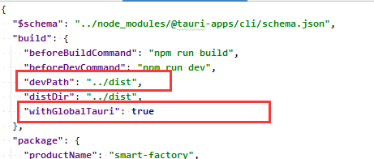
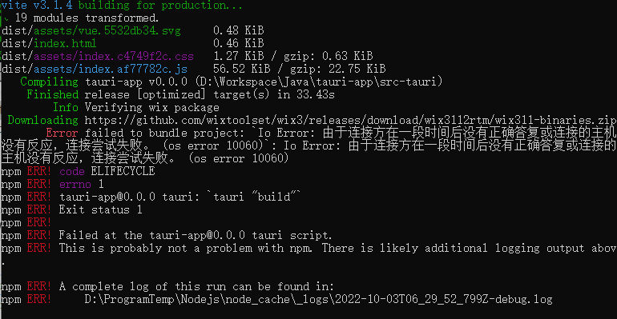
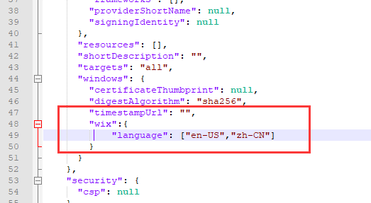

Vue+Tauri+PrimeNg搭建桌面应用开发
1.预置操作
https://tauri.app/zh/v1/guides/getting-started/prerequisites
nodeJS配置
1
2
| registry=https://registry.npm.taobao.org/
sass_binary_site=https://repo.huaweicloud.com/node-sass/
|
2.创建工程
1
2
3
4
5
6
7
8
9
10
11
12
13
14
15
16
17
18
19
20
21
22
23
24
25
26
27
28
29
30
31
32
33
34
35
36
37
38
39
40
41
42
43
| # 创建工程 选择npm->vue
npm create tauri-app
cd tauri-app
npm install
# 安装tauri模块
npm install --save-dev @tauri-apps/cli
# 安装primeng
npm install primevue@^3 --save
npm install primeicons --save
# sass
npm install less sass node-sass sass-loader style-loader --save
# 初始化taUri
npm run tauri init
# 它会向您询问几个问题：
# 您应用的名字是什么？
# 这将会是您打包后和操作系统会调用的应用名称。 您可以在此处填写任何您想要的名称。
# 窗口标题叫什么？
# 这将会是您主窗口的默认标题。 您可以在此处填写任何您想要的名称。
# 前端页面资源 (HTML/CSS/JS) 相对于 <current dir>/src-tauri/tauri.conf.json 文件将被创建的位置？
# 这是 production环境时tauri加载web前端资源的目录.
# Use ../ui for this value.
# 开发环境时的加载路径?
# 可以是一个网络地址也可以是一个文件路径 development.
# Use ../ui for this value.
# 前端测试命令是什么？
# 这是用于启动前端测试服务器的命令。
# 前端构建命令是什么？
# 这是构建前端文件的命令。
# 运行
npm run tauri dev
# 打包
npm run tauri build
|
3. 修改src目录下文件信息
参考：http://primefaces.org/primevue/setup
3.1 修改main.js
1
2
3
4
5
6
7
8
9
10
11
12
13
14
15
16
17
| import { createApp } from "vue";
import "./style.css";
import App from "./App.vue";
// 导入PrimeVue
import PrimeVue from 'primevue/config';
import "primevue/resources/themes/saga-blue/theme.css";
import "primevue/resources/primevue.min.css";
import "primeicons/primeicons.css";
import Dialog from 'primevue/dialog';
import Button from 'primevue/button';
const app = createApp(App);
app.use(PrimeVue, {ripple: true});
app.component('Dialog', Dialog);
app.component('Button', Button);
app.mount("#app");
|
3.2修改App.vue
1
2
3
4
| <template>
<Dialog></Dialog>
<Button>测试</Button>
</template>
|
3.3 修改tauri.conf.json

1
2
| "devPath": "../dist",
"withGlobalTauri": true
|
3.3 编译运行
1
2
| npm run build
npm run tauri dev
|

99.FAQ
99.1 打包错误
打包报错，则修改src-tauri\tauri.conf.json
1
| "identifier": "com.tauri.build"
|
99.2 打包错误

wix311-binaries.zip
手动下载，并在tauri目录下创建WixTools文件夹，将下载的包解压并删除压缩包
C:\Users\当前登录用户名\AppData\Local\tauri\WixTools
上述路径不存在，就创建
99.3 支持中文
修改src-tauri\tauri.conf.json

1
2
3
4
| ,
"wix":{
"language": ["en-US","zh-CN"]
}
|